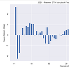

Continuous Trading
| 항목 | 값 |
|---|---|
| 날짜 | 2023-11-27 |
| 접근 | 유료 |
| URL | https://www.algos.org/p/continuous-trading |
| 부제 | Insights into the alpha pipeline and effective machine learning |
{kind=link}
Introduction
Often you will see researchers working with X period trade bars and developing strategies that rebalance their portfolio at a given interval (commonly that of their data interval).
This is great for keeping your logic simple and reducing the need for large data processing/storage on the research side, but it leaves money on the table.
It also makes us easier to front-run and leads to us missing out on potential short-term seasonality gains in execution. Excessive turnover also poses a problem when we keep the logic this simple.
Index
-
Introduction
-
A Simple & Dirty Example
-
When Should We Exit?
-
Continuous Trading:
-
Data
-
Features
-
Forecasts
-
Portfolio Optimization [Code Here]
-
Execution
-
-
Avoiding Frontrunners
-
Final Remarks
A Simple & Dirty Example
Before explaining the better way to do things, I’ll start with the simple and dirty way to do things - the method you’ll see very often in papers and material online.
There’s nothing terribly wrong with this approach as it does provide a much faster to deploy / build solution. When you’re writing a paper and the main focus is on your model itself, all of a sudden doing the other components well seems like a waste. In production systems, fast to deploy may also be more worthwhile.
That said, if we want the best overall trading strategy we need to make the entirety of the pipeline continuous, which we will explore in the next section.
For the data , we will likely use X period bars, in this example lets say 1-hour bars. The price used in this is the trade price for most cases. The advantage is that this data is easy to get and efficient to store, but we would be better off taking midprice data and forming custom bars of the same period that use midprice instead of trade price. The best solution is of course continuous, but that’s for later.
Features and every other part of the process are evaluated as new data comes in so would be of the period our data is. This can leave us at a pretty big disadvantage if we notice there is a quick signal decay and we have to wait until the next bar to recalculate the signal.
Forecasts are similarly evaluated on each new feature for most algorithms, but some may not because they have an arbitrary wait before rebalancing so there is no point in recalculating the forecast.
Finally, our portfolio is rebalanced either every time we get a new data update or at a different interval. This is a dirty method for reducing turnover where we say that a position must be held for a minimum of X period or we only rebalance every X period (which is longer than our data period - could be hourly data with rebalance at close).
So our full example might look like this:
We have a universe of 20 FX tickers, data is 1h closing trade px bars, feature is 14h RSI, model is OLS against 4h forward returns, and we use MVO to form our portfolio with historical volatility.
We can cut out the modeling and portfolio optimization by ranking the assets based on RSI, and then taking the upper decile as longs, and shorting the lower decile.
When Should We Exit?
The question of when should we exit is a very important one. A large chunk of our profits are lost to transaction costs (spread + exchange fees + markouts) and there are many managers whose entire portfolio of quant strategies would not be possible without the optimization of their transaction costs. The difference between naive market orders with unnecessary turnover and smart execution with highly optimized portfolio turnover is often the make or break for a strategy.
Especially for medium-frequency strategies, where there will be a lot more turnover, it then becomes incredibly important for us to pay attention to how much we trade and whether it is worthwhile to do so. Similar to delta hedging, if we tweaked our portfolio to be as optimal as possible we would just end up bleeding away any potential profits (or in our delta hedging example, risk offsetting) into transaction costs.
Thus, we should only turn over our portfolio if the new portfolio gives us more EV than our current portfolio. We not only need to make sure that the new portfolio has more EV, but that the increase in EV is greater than transaction costs (we also may want to add some margin of safety here).
Why does our turnover matter in the context of continuous trading though? Going back to our delta hedging example, if we continuously delta hedge we will bleed transaction costs until we have no capital left at all. Similarly for trading, if we constantly rebalance without any thought to if we have crossed the threshold for it being wise to do so and instead simply change our portfolio to the highest EV portfolio constantly, we will bleed away all our profits to transaction costs.
Think of turnover optimization as a necessary pre-requisite to continuous trading and the avoidance of excessive costs killing our alpha.
Continuous Trading - Data
We need some definition of price, and because we are doing it continuously we are now working with microstructural determinants of price, or rather fair value. There’s not much benefit to using complex weighted midprices or microprices when we can use the standard midprice - if we need to denoise this we can add an EWMA to it, but that is best left for the feature level of the equation.
Using quote-level granularity data now means that we react as soon as our signal is worth acting on, not minutes later when our rebalance interval occurs.
We do not need to have tick level granularity always as this can become impractical at a computing level, we can make it into 1-second bars with very little difference to the final outcome. The key point here is that the frequency at which we ask ourselves whether to trade (which originates from data events in an event-based architecture) is many many times more granular than the frequency we actually trade, allowing us to react to sudden events before others.
Continuous Trading - Features
When it comes to features we need to move away from thinking in periods. We no longer have a 14-period RSI on 1-hour bars, we now have a 14-hour RSI on continuous data. There is no 30-period MA, only a 30-hour MA. This is where our features differ from the standard practice that you will most often see.
Continuous trading is the default standard for multiple major quantitative trading firms but does require you to define the lookback of your features differently.
We also have a slightly more involved alternative which is online models. Online models are great for the HFT timescale because you don’t need to recalculate all the data points, but for MFT strategies we will not be compute concerned and can live with a bit of extra computation. They generally complicate the process and make iterating through ideas much slower. My judgment is that these models should be skipped in the interest of time efficiency.
Continuous Trading - Modeling
Modeling is very overhyped in the quant world, think of it simply as a transform. We already have transformed our input data into features, we may have even done some aggregation to avoid huge data sizes, a transform in itself, and now we need to make 2 transformations.
We need to map our features into forecasts (expected value) and also we will want to get an estimate of volatility. We have to forecast both the drift and variance of the forward-looking process.
The expected value is by a mile the most important, in fact, most will use historical volatility (or if you are feeling adventurous & working with higher timeframes you can use option pricing volatilities). My note on using option volatility really only applies to higher timeframes where we start to move out of medium frequency and into the middle ground of medium to low frequency.
If we have our feature, in our example RSI, and our target, 4h forward returns, then we simply map them using a tool of our choice. We can use a linear regression or if we have good justification we can apply more advanced models. A rule of thumb worth following is to use the minimum effective complexity, if you don’t need extra complexity, avoid it. You’ll overfit otherwise. Non-linear models work best when you have many features and can no longer manually engineer these non-linear ideas as you can when the feature sets are smaller. Great care must again be taken not to overfit.
We don’t have much of a change compared to normal trading, however, and simply re-run our model at every new feature event.
Continuous Trading - Portfolio Optimization
We need to evaluate our portfolio given some set of objectives continuously. There are many ways to do this, but here, I will assume that we have a delta neutrality constraint on a long/short portfolio. If we have the ability to short, then we also want to ensure that we do not have massive notional positions and provide a leverage constraint to our portfolio.
We can apply SPCA to our weights at the end to avoid having to trade incredibly small sizes, but I have not added that. Readers can borrow that from previous code on Semi-Definite Programming (pairs trading) implementations that used this.
# Importing our libraries
import numpy as np
import cvxpy as cp
# Defining The Parameters
num_assets = 3 # number of assets in our sim / that we generate data for.
num_periods = 10 # periods to iterate over, just to show that our portfolio evolves, no need for in prod
txn_cost = 0.01 # 10 bps assumption for transaction costs
max_leverage = 1.5 # maximum absolute portfolio weight sum (max leverage)
risk_aversion = 0.5 # parameter to define our aversion to risk
# Generate some random data, obviously fill this in with real data
np.random.seed(8)
returns = np.random.normal(0.05, 0.1, (num_periods, num_assets))
signals = np.random.normal(0, 1, (num_periods, num_assets))
# Historical volatility (std), simple and works
historical_volatility = np.std(returns, axis=0)
# Initial portfolio weights under equal weighting
initial_portfolio = np.full(num_assets, 1.0 / num_assets)
# CVXPY variable for our portfolio weights
weights = cp.Variable((num_periods, num_assets))
# Aligning dimensions
initial_portfolio_matrix = np.tile(initial_portfolio, (num_periods, 1))
# Computing turnover and transaction costs
turnover = [cp.abs(weights[0] - initial_portfolio_matrix[0])]
for t in range(1, num_periods):
turnover.append(cp.abs(weights[t] - weights[t-1]))
total_transaction_cost = txn_cost * cp.sum(cp.hstack(turnover))
# Portfolio volatility over each of our periods
portfolio_volatility = cp.sum([cp.quad_form(weights[t, :], np.diag(historical_volatility)) for t in range(num_periods)])
# Objective: Maximize expected returns, accounting for transaction costs and volatility
expected_returns = cp.sum(cp.multiply(returns + signals, weights), axis=None)
objective = cp.Maximize(expected_returns - total_transaction_cost - risk_aversion * portfolio_volatility)
# Constraints: Delta neutrality and leverage constraint
constraints = [cp.sum(weights[t, :]) == 0 for t in range(num_periods)] # Delta neutrality (for long/short port.)
constraints += [cp.norm(weights[t, :], 1) <= max_leverage for t in range(num_periods)] # Leverage (max abs sum wgts)
# Problem definition and solving by CVXPY
problem = cp.Problem(objective, constraints)
problem.solve()
# Finally get our optimized weights
optimized_weights = weights.value
print("Optimized Portfolio Weights with Volatility Targeting:")
print(optimized_weights)
The code is nicely documented, so I would be mostly repeating myself if I walked through each part of it, but hopefully, this is useful to readers when understanding how this works on the technical side.
At every new event, we take our historical volatility, expected returns, current portfolio, and constraints/parameters and then pass them to the portfolio optimizer. This leads to an optimal portfolio for risk/return, but crucially by accounting for transaction costs we ensure that all turnover is strictly necessary.
Now that we have a decision on whether to turn over a position in the framework of costs to do so, we can have as many portfolio evaluation periods as we would like whilst not increasing our turnover.
Continuous Trading - Execution
This is only relevant to trading systems where we have components in place to optimize execution as well. If we want to do things simply, we can use market orders and turnover the portfolio immediately.
If we have an advanced execution system, then we will have an agent who decides whether to execute immediately or not. Assuming that we now have multiple asynchronous alphas, we will then need to judge the likelihood that another negatively correlated (in terms of position choices) alpha will want to trade soon, and we can internally match the flows instead of sending it out.
Along these lines, our agent should continuously evaluate whether to be aggressive or passive in the context of how signals decay and the probability of other flows coming from strategies that might disagree (and can be canceled out, flow-wise).
Avoiding Frontrunners
As we saw in the prior seasonality article, there are clear minute-by-minute effects in almost every market. There are also hourly and even day-of-month effects. A lot of this is from rebalancing flows, where people are able to anticipate the actions of others.

When we trade continuously, we no longer trade within these intervals and can then be the ones doing the front-running. A smart execution agent may consider this as well, but of course, this requires signal decay analysis to trade off against.
Final Remarks
We’ve now seen how portfolio optimization with turnover costs is implemented from the technical side, which readers are free to use in their own trading algorithms.
More importantly, readers should now have an understanding of how large medium-frequency desks manage alphas and the framework they think in to make sure their alphas react first - before scheduled intervals.